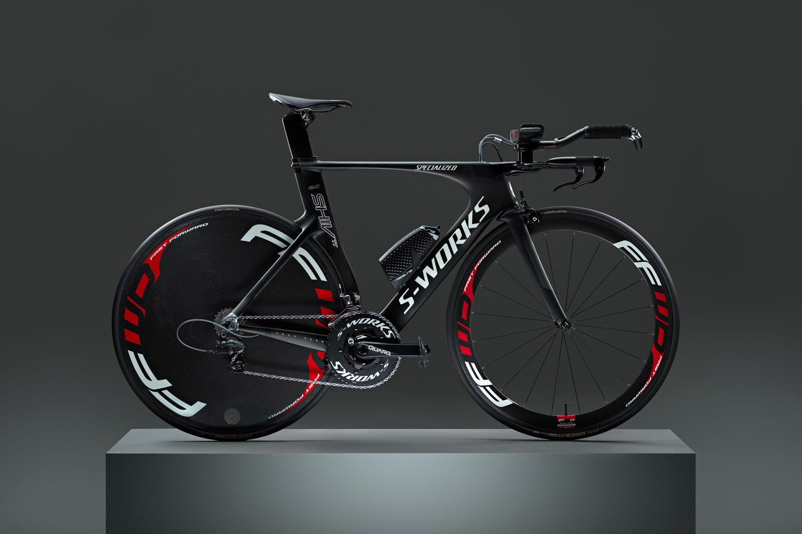
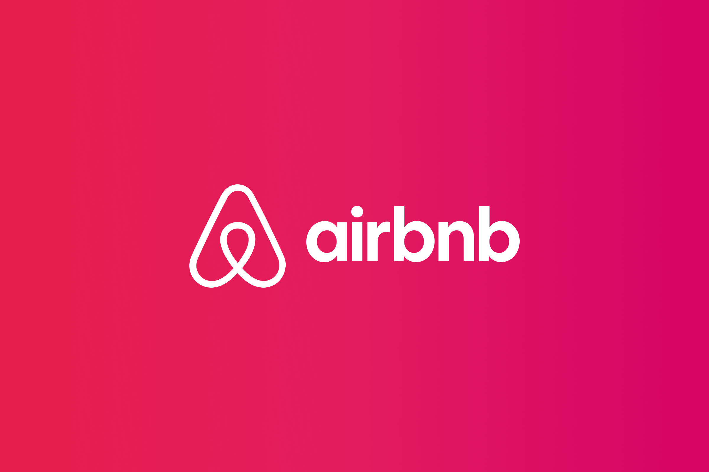

Created a machine learning model by utilizing Python to predict chess game outcomes using a dataset of 200,000 records. Explored and transformed the data using pandas, matplotlib, and seaborn, and employed scikit-learn to implement a decision tree algorithm for accurate game result predictions based on game factors.

Cleaned a housing dataset using SQL. Standardized dates, populated missing addresses, and employed CTE's and case statements to enhance data quality based on specific criteria.
Developed a personality prediction system in Python. Explored, cleaned, and transformed data using pandas, matplotlib, wordcloud, and seaborn. Employed the Natural Language Toolkit for further dataset processing and built a GUI using the Tkinter library.
Utlized Tableau to create comprehensive visualizations for a COVID-19 dataset by creating diverse charts and maps to analyze infection rates and death counts, providing meaningful insights into the pandemic trends.
Utilized Microsoft Power BI to visualize a data professional survey. Employed power query for dataset cleaning and transformation. Created visualizations for looking into average salary by job title, satisfaction with work/life balance and so on.

Built an Excel dashboard for bike sales analysis, transforming and cleaning the dataset with various formulas. Utilized pivot tables to create visualizations and extract insights.

Used Python to identify correlations in a car sales dataset, exploring and cleaning the data by addressing number formats and other columns. Employed pandas, matplotlib, numpy, and seaborn to create insightful visualizations.
Used Python and employed BeautifulSoup, requests, and pandas to scrape data from Walmart's webpage, extracting, cleaning and feeding it into Excel. Implemented a function to automate the data append process into Excel every 24 hours.

Used Tableau to transform an Airbnb dataset into insightful visualizations. Utilized maps and graphs to depict spatial patterns and pricing insights, offering a comprehensive exploration of the data.